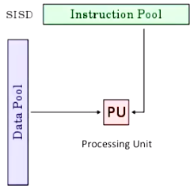
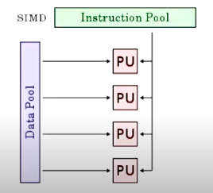
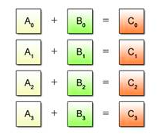
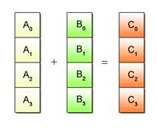
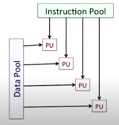

Flynn’s taxonomy¶
Flynn’s Taxonomy is a classification of computer architectures. It divides computer architectures into 4 classes: Single Instruction Single Data (SISD), Single Instruction Multiple Data (SIMD), Multiple Instruction Single Data (MISD) and Multiple Instruction Multiple Data (MIMD).1
SISD¶
For the purposes of classification, we abstract a computer architecture into a data pool, an instruction pool and processing units. In SISD, at each step, we fetch an instruction from the instruction pool and a unit of data from the data pool and send the instruction and the unit of data to the processing unit for execution:

You can think of the instruction as a function and the unit of data as the inputs to the function. In the hardware, we fetch the instruction pointed to by the program counter, we load data into registers, and the processor executes the instruction on the registers.
SIMD¶
In SIMD, at each step, we fetch an instruction from the instruction pool and multiple units of data from the data pool and send the instruction and each unit of data to a processing unit for execution:

In the hardware, we fetch the instruction pointed to by the program counter, we load multiple data into wide registers (a single wide register can contain multiple integers or multiple floats) and the processor executes the instruction on the registers in parallel.
Note that the processing unit do not have to be separate cores. SIMD can work within a single core, because an instruction can be applied to multiple data units in parallel within a single core.
Example¶
Take the example of computing the element-wise sum of two vectors: C = A + B. For SISD, at each step, we fetch a pair of elements (one element from A and one from B) and apply the add instruction. See the image from this article below, which shows multiple steps of computation:

For SIMD, at each step, we fetch multiple pairs of elements (the elements from A and the elements of B) and apply the add instruction to each pair of elements in parallel. See the image below, which shows one step of computation:

MIMD¶
For MIMD, in each step, we fetch multiple data units from the data pool and multiple instructions from the instruction pool and send each data unit and instruction to separate processing units for execution in parallel:

In the hardware, each core in a multi-core processor fetches data and an instruction and independently executes the instruction on the data in parallel.
Usage¶
Older computer architectures like the Pentium 4, which launched in 2000, use SISD. The SSE x86, or Streaming SIMD Extensions x86, computer architecture extends the x86 architecture to include instructions for SIMD parallelism. Xeon e5345 is an example of a MIMD architecture that uses multiple cores. Modern computer architectures use SIMD within each core and MIMD across cores. I don’t discuss MISD, because it is rarely used in practice.